|
Urethane Bushings |
| 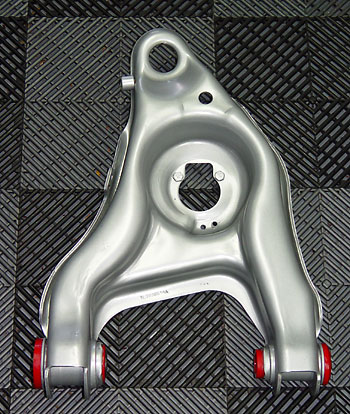 Urethane bushings add responsiveness to the suspension, at the cost of some ride quality. OEMs use rubber bushings to damp vibrations that would otherwise be transmitted to the driver. |
| 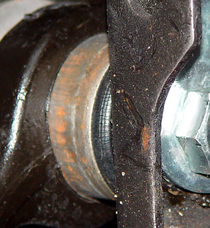Urethane bushings also last much longer without deteriorating. The image to the right shows the deterioration of the upper control arm bushings from my one-month-old truck. |
|
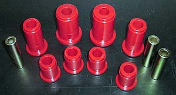 Prothane makes a front control kit (part # 6-212 ). Although they seem to have the greatest impact on the front a-arms, other places for urethane bushings include anti-sway bar end links and rear leaf spring bushings. I also bought the Energy Suspension rear leaf spring kit, which includes bushings and inner sleeves for the front and rear spring eyes and shackles (part #4.2150). Energy Suspension also makes a complete kit (part # 4.18122) for the 97-03 F150 ("Complete Master Bushing Set Includes: Front control arm bushings, body mounts, rear leaf spring bushings, front sway bar bushings"). Squeaks are the number one urethane-related problem. Lubrication is the key. According to Prothane, the special urethane grease is only special in that it is thicker and stickier, so it lasts longer. Regular grease is fine, but it just won't last. So unless you are drilling for zerk fittings, you have to use urethane grease. You will need extra -- the little tubes that come with bushings are never enough. Also, according to Prothane, most urethane squeaks come from the sides of the bushings, so make sure to liberally coat the sides. After much research, I assembled mine with anti-seize between the bushings and the shells, and urethane grease between the pins and the bushings and between the end caps and the bushings. If (or when) I get squeaks, I will lube with regular chassis grease applied through zerk fittings. |
|
stock bushing removal: |
|
The swap is not difficult, but it is time-consuming and messy. It only takes about 10 minutes total per bushing. Don't even think about doing this inside. The rubber produces copious amounts of acrid black smoke. Also, the burned rubber turns to a sticky black goo. You will need a paint thinner-type solvent to clean up the mess. Also, make sure to tarp off your work surface if it will easily stain. You could ruin concrete or a similar surface. I used a large concrete mixing pan filled with water under my burn area. I strongly recommend this, as burning chunks of rubber will spew out. Have a water hose handy. You will need the following:
Take photographs and measurements of the OEM bushings. The uppers are all the same, and the lower fronts are both the same, but the lower rear bushings are different from side to side. The measurements are to ensure that the bushings are spaced correctly on reinstallation. The spacing must be close to correct to get them back in. Also, note that you must reuse one lower rear inner sleeve and all of the upper inner sleeves (the Prothane kit only comes with three inner sleeves). Prepare eight labeled baggies (upper/lower, pass/driver, front/rear). 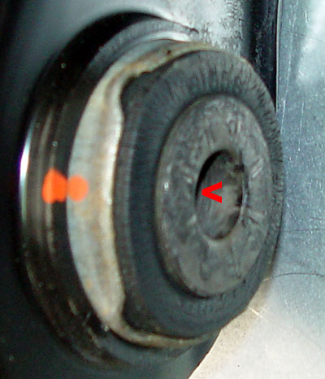Use a large punch to remove the end caps. Go in through the inner sleeves, catch the inner edge of the caps and tap them out. Putting a loose piece of duct tape on the edge will keep them from popping out. Put each one in its labeled baggie. Apply a strong flame to the inner sleeves. Angle the flame to concentrate it on the sleeves, rather than just spewing out the other end. When the rubber begins to bubble around the opposite end of the sleeve (120 seconds or so), move over to that end and apply the heat long enough to start the rubber burning around the sleeve on that end. Then take a tool (I used a 1/2" drive socket extension) and push the sleeve out. If you are lucky, it will fall into the water pan. If you are unlucky, it will become a flaming goo-covered projectile. Some may shoot out under impressive force. One of mine flew about 10 feet. So make sure that you have them aimed towards a safe, non-flammable area. As soon as each sleeve has cooled, clean it off with solvent and put in it its baggie. While the bushing is still hot, take a standard screwdriver and work around the edges to loosen the bushing from the outer sleeve. Once it is free around the edges, either push the bushing through or pry it out. Clean off the arm and the outer sleeve with thinner and move on to the next joint. 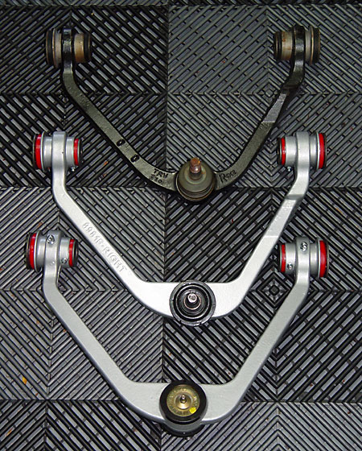 The arms will probably be burnt all to hell. Plan on painting or powder coating them. The photo to the right compares the stock UCAs with powder coated Moog UCAs. The Moogs are much beefier and have greaseable ball joints. If you are going to powder coat, you will need to remove the ball joints first. This means that you will need to buy aftermarket upper arms. The ball joints on the stock uppers are non-removable. I recommend replacing all of the ball joints (and upper control arms) with Moog ball joints anyway. The stock ball joints are junk. Get a cheap ball joint press from Harbor Freight or rent one from Vato Zone. |
|
leaf spring and shackles : |
| The leaf springs and shackle bushings install pretty much the same as the control arms. But the rubber is much more volatile, so be prepared with your fire control measures. |
|
urethane bushing installation : |
|
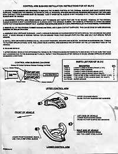The Prothane instructions cover the basics. Click on the image for a full-screen version. [installation in progress, update will be posted when done] The real tip here is to use plenty of the supplied urethane grease (or anti-seize) anywhere that metal touches urethane. Screw this step up and you will eventually have maddening squeaks over every bump. One important thing to remember is that urethane bushings operate in a completely different way from stock. The stock rubber bushings are solidly attached to both the outer (control arm) sleeve and the inner sleeve, and the inner sleeve is clamped down and prevented from moving, so the suspension movement is the result of the rubber twisting. With urethane bushings, the inner sleeve actually rotates inside the urethane. So with the stock rubber bushings, there is nothing moving, as nothing needs lubrication. But with urethane bushings, the interface between the bushing and inner sleeve (and also the outer mushroom-shaped caps) needs to be lubricated. 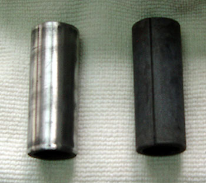 The upper four upper inner sleeves and the driver's side rear lower sleeves and caps are reused. The sleeves, however, are not designed to have something rotating around them. They have a slightly rough surface with lots of little dings and ridges. I took the time to sand them clean, paying special attention to the ridge created by the seam (when installing, I pointed the seam at the center of the truck). |
|
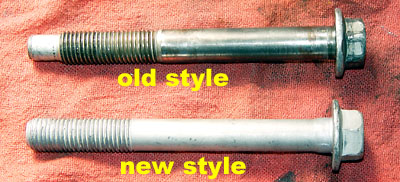CRITICAL NOTE: Ford uses different kinds of lower control arm bolts. The part was revised sometime in model year 2002. Check to make sure that the bolts will slide through the Prothane-supplied sleeves. I had the old style bolts, which are .62" all the way along the length of the shaft. This was a very tight fit. I managed to mess up one of the bolts, so I ordered new ones from Ford. The latest revision of the bolts taper the shafts down to .57". These slip in much easier. Even so, I used Dremel sanding drums and took a little off of the ID of the sleeves. I also coated the inside with anti-seize (grease would work fine also). The difference in installation difficulty was night and day. The bolts slid right in with just finger pressure. Well worth the time. |
|
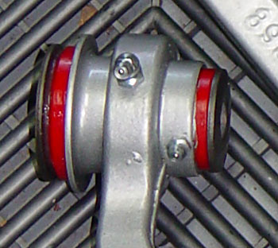
To be able to keep grease in the
bushings, I drilled and tapped the control arms for 1/4-28 zerk
fittings. It remains to be seen whether the zerks are enough to
keep the bushings from rotating in the sleeves. If this happens,
the lubrication passage will be blocked.
I installed the zerks in the bottom middle of the lower control arm (LCA) sleeves, but had to add an extra zerk to each of the UCA sleeves to prevent the bushing from spinning inside the sleeve. |
| For grease to be able to flow into the channels on the ID of the bushings, you have to cut a ring around the ID to link the grease passage from the fittings to the grease passages in the bushings (they run front-to-rear). |
|
So the process is:
|
| 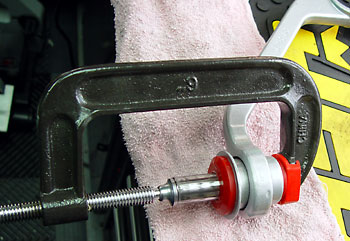 This photo shows an inner sleeve being driven in with a 6" c-clamp. Liberally smear urethane grease on both the inside of the bushing and the outside of the sleeve. |
| 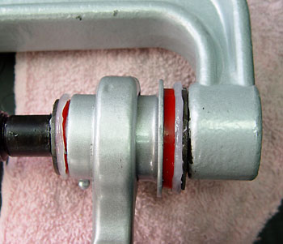 When installing the end caps, use lots of urethane grease on both the outside of the bushing and the inside of the caps. The photo to the right shows the grease being forced out as the caps are pressed into place with a ball joint tool. |
|
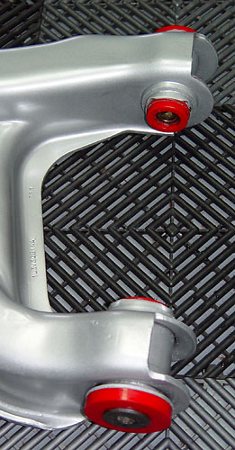
Another tip comes from Mustang road racers. Make sure that the inner sleeve is longer than the bushing. If the bushing is making contact with the frame mounting tabs, it will bind. So if after the bushings are installed, the inner sleeve does not stick out, remove the bushing and trim that end. In our case, we have outer caps on most of the bushings. So we need to make sure that the bushings are seated well on both sides. This may require some trimming of the ends of the bushings. In the photo to the left of the driver's side LCA, the rear bushing reuses the stock inner sleeve and end caps, but the front does not. You can see that the inner sleeve is much shorter than the bushing. The bushing will probably need to be trimmed. |
| The whole process took me about 20 hours, evenly divided between the burning, the prep, and the install. Between the messy burning rubber and the gooey urethane grease, the job is most unpleasant. |